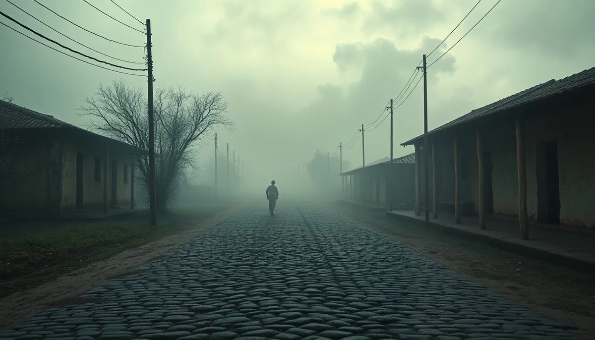

OKpolítico
OKpolítico1814: El eclipse del Siervo y el retorno del rey

Episodio 11 de la serie documental 'Historia política de México, año por año'. Primera parte del año 1814 (enero a abril). Analizamos el crítico periodo en que la insurgencia mexicana experimenta el desastre militar de Puruarán, la captura y fusilamiento de Mariano Matamoros y la reorganización polí
Compartir por WhatsApp▶ Ver este video en YouTube y suscríbete
1. Apertura: El vendaval de enero
El año de 1814 abrió bajo una atmósfera de profunda incertidumbre militar y política en la Nueva España. Pocas semanas después de haber proclamado solemnemente la independencia absoluta en Chilpancingo, el movimiento insurgente recibió una sacudida que cambiaría para siempre el equilibrio de poder en el territorio americano.
Apenas el 5 de enero de 1814, las tropas realistas infligieron un golpe devastador al ejército de José María Morelos en los campos de Puruarán. En cuestión de minutos, la aparente solidez del mando rebelde se desmoronó, precipitando la captura de uno de sus más valiosos estrategas, Mariano Matamoros.
✉️ Recibe lo importante del día en tu correo. Suscríbete gratis →Mientras tanto, al otro lado del océano Atlántico, el orden imperial napoleónico colapsaba a pasos agigantados. La inminente liberación de Fernando VII en Europa planteaba un dilema monumental: ¿qué pasaría con la frágil revolución americana si el rey legítimo regresaba para reclamar su trono sin admitir concesiones constitucionales?
2. Situación política de México: El virreinato y la asamblea errante
En la capital novohispana, el virrey Félix María Calleja consolidaba un modelo de contrainsurgencia implacable, respaldado por una estructura fiscal extraordinaria y el control férreo de las principales rutas de abastecimiento. Calleja desconfiaba profundamente de las reformas liberales emanadas de Cádiz, pero las toleraba mientras le permitieran sostener la autoridad de la Corona.
En el bando contrario, el Congreso del Anáhuac se vio forzado a abandonar su sede original en Chilpancingo para convertirse en una asamblea itinerante, perseguida por columnas militares leales al gobierno virreinal. Privados de una capital fija, los diputados debían legislar sobre mulas de carga y bajo chozas provisionales en la agreste Tierra Caliente.
A pesar de la precariedad, los congresistas insistían en materializar un marco jurídico propio para la América Septentrional. Su objetivo inmediato era redactar un texto constitucional republicano que superara las contradicciones gaditanas y borrara de raíz cualquier sumisión hacia la metrópoli española.
3. Principales personajes: Caudillos, juristas y generales de la Corona
José María Morelos y Pavón enfrentaba en estos primeros cuatro meses el momento más amargo de su trayectoria pública. Tras la derrota de Puruarán y el posterior fusilamiento de Matamoros, el caudillo no solo perdió su brazo derecho militar,
sino también la confianza ciega que el Congreso había depositado en su liderazgo. En las filas del Congreso emergían con fuerza las voces de juristas y clérigos como el doctor José María Cos y José María Liceaga.
Convencidos de que la concentración de poder en un solo hombre conducía al desastre bélico, estos hombres promovieron la conformación de un ejecutivo colegiado, recortando el margen de acción del propio Morelos. Por el bando realista, oficiales criollos como Agustín de Iturbide y Ciriaco del Llano capitalizaban sus victorias recientes en el Bajío y Michoacán.
La eficacia táctica de estos mandos demostraba que las armas de la contrarrevolución estaban en manos de novohispanos decididos a sofocar la insurrección en nombre del orden establecido.
4. Conflictos y guerras: El choque de Puruarán y la caída de Matamoros
El 5 de enero de 1814, en las inmediaciones de Puruarán, Michoacán, las columnas realistas comandadas por Agustín de Iturbide sorprendieron a las fuerzas rebeldes en retirada. El choque duró pocos minutos pero desarticuló por completo la línea defensiva insurgente, dispersando armamento y pertrechos.
Mariano Matamoros fue capturado con vida durante el combate, constituyendo el mayor trofeo de guerra para el virreinato desde la caída de Miguel Hidalgo. Morelos ofreció intercambiarlo por cientos de prisioneros realistas capturados en campañas previas, pero la intransigencia de Calleja fue absoluta y la oferta fue rechazada con desdén.
El 3 de febrero de 1814, Matamoros fue pasado por las armas en el Portal de Guadalupe en Valladolid. La ejecución sacudió las entrañas del movimiento insurgente y desató represalias inmediatas, cerrando toda posibilidad de tregua o negociación entre ambos bandos durante el resto de la primavera.
Acosado en varios frentes, Morelos ordenó la evacuación de Oaxaca y la concentración de fuerzas en la serranía del sur. Mientras tanto, las partidas rebeldes en Veracruz y Guanajuato recurrieron con mayor frecuencia a tácticas de guerrilla dispersa,
perdiendo la capacidad de sostener batallas formales a campo abierto frente a los ejércitos virreinales.
5. Economía y sociedad: La asfixia de la guerra en Tierra Caliente
Para el primer tercio de 1814, la economía novohispana mostraba cicatrices irreversibles tras casi cuatro años de combate ininterrumpido. El virrey Calleja impuso contribuciones forzosas sobre el comercio capitalino y gravámenes especiales a las propiedades urbanas para sostener los sueldos del ejército realista en campaña.
En las regiones rebeldes de Michoacán y el sur, el control de las haciendas azucareras y las tierras de cultivo resultaba vital para la manutención de los insurgentes. Sin embargo, el paso constante de tropas de uno y otro bando provocó la ruina de los trapiches,
la escasez de granos básicos y el éxodo forzado de comunidades campesinas hacia la sierra. Para sustentar la administración y la tropa, el Congreso insurgente recurrió a la acuñación precaria de moneda de cobre y a préstamos obligatorios a propietarios locales.
Esta asfixia económica debilitó el apoyo popular en varias villas, donde la población común quedaba atrapada entre las exacciones rebeldes y el castigo punitivo de los destacamentos virreinales.
6. Relaciones internacionales: El cerco exterior y la soledad diplomática
En el terreno exterior, las aspiraciones diplomáticas de la insurgencia novohispana chocaban contra un muro de silencio. A pesar de los repetidos intentos por enviar emisarios y conseguir el reconocimiento formal de potencias extranjeras, ningún gobierno europeo ni americano estaba dispuesto a arriesgar sus vínculos con el Imperio español.
Los Estados Unidos, enfrascados en su propia guerra contra el Imperio británico desde 1812, optaron por una política oficial de estricta neutralidad en sus fronteras meridionales. Aunque armas y filibusteros cruzaban de forma clandestina por Luisiana hacia Texas, Washington evitó cualquier compromiso vinculante con los diputados del Anáhuac.
Para la primavera de 1814, la diplomacia insurgente entendió que su causa dependía exclusivamente de su resistencia interna. Los triunfos aliados contra Napoleón en Europa presagiaban un endurecimiento de la postura de Madrid, aislando por completo a los rebeldes americanos en el tablero geopolítico global.
7. El mundo en 1814: La caída de Napoleón y el retorno del rey a España
Mientras en la Nueva España se libraba una guerra de desgaste, en Europa los primeros meses de 1814 marcaron el desmoronamiento definitivo del Imperio napoleónico. Los ejércitos de la Sexta Coalición cruzaron el río Rin en enero y apretaron el cerco sobre el corazón de Francia.
A finales de marzo de 1814, las tropas aliadas ocuparon París y forzaron la abdicación incondicional de Napoleón Bonaparte a inicios de abril. El colapso del proyecto imperial francés abrió de par en par las puertas para la restauración de las dinastías borbónicas en Francia y en España.
El 22 de marzo de 1814, Fernando VII cruzó finalmente la frontera y regresó a suelo español tras casi seis años de confinamiento en el castillo de Valençay. Aunque las Cortes liberales de Cádiz esperaban que el monarca jurara lealtad a la Constitución de 1812 antes de entrar en funciones,
Fernando evitó comprometerse y comenzó a tejer alianzas con los sectores más reaccionarios del reino. Al mismo tiempo, en el Río de la Plata y en Venezuela, los movimientos independentistas vivían coyunturas determinantes. En enero de 1814,
Gervasio Antonio de Posadas asumió como Director Supremo de las Provincias Unidas, mientras Simón Bolívar y los republicanos venezolanos se batían en combates encarnizados como San Mateo y Bocachica frente a las implacables huestes realistas.
8. Mito vs. historia documentada: La autoridad de Morelos en crisis
Existe el mito arraigado de que Morelos conservó un poder dictatorial e indiscutido sobre toda la insurgencia hasta el día de su aprehensión en 1815. Sin embargo, la historiografía documentada revela que los primeros meses de 1814 presenciaron una auténtica rebelión política interna contra el caudillo.
Alarmados por el colapso militar en Puruarán y temerosos de que la concentración de mando derivara en una tiranía militar, los diputados despojaron a Morelos de la potestad ejecutiva exclusiva. En su lugar, instauraron un triunvirato integrado por Morelos, José María Cos y José María Liceaga, donde las decisiones debían consensuarse por turno.
Para algunos historiadores, esta subordinación de las armas a la deliberación civil demostraba la madurez democrática de la asamblea; para otros, constituyó un error estratégico fatal que privó a la insurgencia de agilidad militar en su momento más vulnerable frente al embate realista.
9. Consecuencias: El repliegue hacia Apatzingán y el pago del hook
Hacia abril de 1814, el contraste con los meses dorados de 1813 no podía ser más elocuente. Aquel caudillo que en Chilpancingo dictaba los destinos de la América Septentrional como generalísimo omnipotente se encontraba ahora reducido a proteger físicamente a un puñado de diputados que redactaban artículos constitucionales en mitad de la selva.
El hook de esta primera etapa del año encuentra aquí su respuesta: en apenas cuatro meses, el desastre de Puruarán y las pugnas institucionales desmantelaron el monopolio de Morelos sobre la revolución. La insurgencia ya no era el ejército conquistador del generalísimo, sino una asamblea errante protegida por un caudillo disciplinado que aceptó su nueva condición de siervo de las leyes.
Y mientras en las cañadas de Michoacán los insurgentes perfilaban con empeño los artículos de su futura constitución republicana, en Madrid la mecha del absolutismo estaba a punto de encenderse. El regreso de Fernando VII amenazaba con anular de un solo plumazo las libertades gaditanas y lanzar toda la fuerza del imperio reconquistado contra las colonias rebeldes.
Sigue viendo
Con información de
Wikipedia — 1814 (es) · Wikipedia — 1814 (en) · Wikipedia — Constitución de Apatzingán · Wikipedia — Fernando VII de España · Del Arenal Fenochio, Jaime (2011). Cronología de la Independencia (1808-1821). INEHRM.